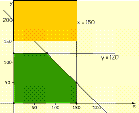
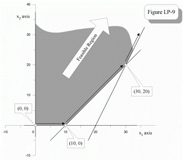
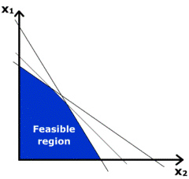
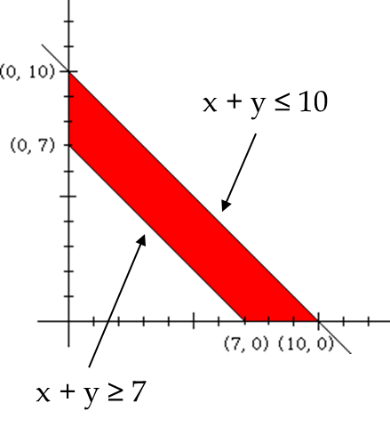
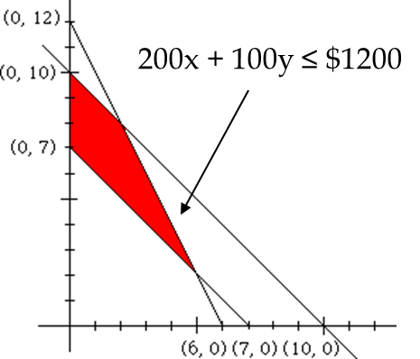
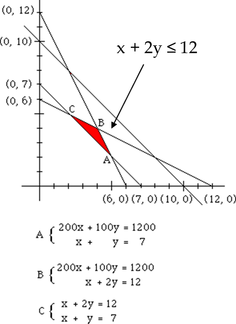

Linear Programming
Linear Programming is used when...- constraints exist on the variables
ex) $\table x>0, \text",", y<2x+1$
- a function of these variables is to be maximized or minimized
ex) $f(x,y)=2x+3y$
| Solution Region Descriptions | ||
|---|---|---|
| Infeasible: no solution region | Unbounded: infinitely large | Alternate Optimal Solutions: > 1 optimal point |
|  |  |  |
Steps...
- Define variables
- Write constraints as a system of inequalities
- Write an expression to be maximized/minimized
- Graph the system & find vertices of the polygon
- Evaluate vertices in expression to be max/min
- Identify the max/min result
Problem:
A farmer has 10 acres to plant wheat & rye. He must plant at least 7 acres. He only has \$1,200 to spend & each acre of wheat costs \$200 to plant & each acre of rye costs \$100 to plant. The farmer must get the planting done in 12 hrs & it takes 1 hr to plant 1 acre of wheat & 2 hrs to plant 1 acre of rye. If the profit is \$500 per acre of wheat & \$300 per acre of rye, how many acres of each should be planted to maximize profits?
Since the question is...
How many acres of wheat & how many acres of rye should be planted...
Let x = # of acres of wheat
y = # of acres of rye
Objective - to maximize profits
Each acre of wheat brings in \$500 & each acre of rye brings in \$300, so:
$\text"Profit"=500x+300y$
We've defined our unknowns and expressed our objective... all else are constraints
How many acres of wheat & how many acres of rye should be planted...
Let x = # of acres of wheat
y = # of acres of rye
Objective - to maximize profits
Each acre of wheat brings in \$500 & each acre of rye brings in \$300, so:
$\text"Profit"=500x+300y$
We've defined our unknowns and expressed our objective... all else are constraints
| Constraints | Inequalities |
|---|---|
| Acerage (must plant at least 7 acres & no more than 10 acres) | $\table x+y≥7; x+y≤10$ |
| Cost (only \$1200 to spend on planting) | $200x+100y≤\$1200$ |
| Time (planting must be done in 12 hrs) | $x+2y≤12$ |
| Implied Constraints | $\table x≥0; y≥0$ |
| Graph acerage constraints | Overlay cost constraints | Overlay time constraints |
|---|---|---|
|  |  |  |
Solve for vertices A, B, C:
$\table A=(5,2); B=(4,4); C=(2,5)$
| $\table Profit_{(x,y)}=500x+300y; {\table A:Profit_{(5,2)}, =, 500(5)+300(2);, =, \$3\text","100}; {\table B:Profit_{(4,4)}, =, 500(4)+300(4);, =, \$3\text","200}; {\table C:Profit_{(2,5)},=, 500(2)+300(5); , =, \#2\text","500}$ |
& so Option B or planting 4 acres of wheat & 4 acres of rye
should be planted to maximize profits
should be planted to maximize profits
Homework